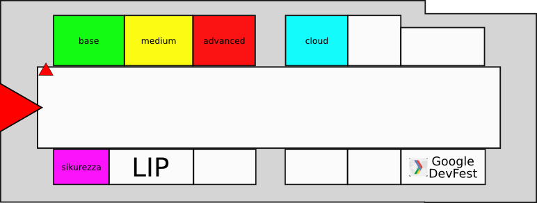

    <div id="page" class="container container-twelve clearfix">

        {% include countdown.html %}

        <div class="twelve columns">
        <div class="container-box">
        <div class="container-box-inner">

            <h1 class="heading"><span>Programma</span></h1>

            <div class="em-medium">
                <p>Il Linux Day Torino apre alle 14 e si conclude alle 18</p>
                <p></p>
            </div>

            <div class="lineDivider"></div>

            <p style="margin-bottom: 30px; text-align: center">
              Attenzione: il programma potrebbe subire variazioni, torna a consultare questa pagina nei prossimi giorni!
            </p>

            <table>
                <thead>
                <tr>
                    <th class="first" width="10%"></th>
                    <th width="18%">Base</th>
                    <th width="18%">Medium</th>
                    <th width="18%">Advanced</th>
                    <th width="18%">Sikurezza</th>
                    <th width="18%">Cloud</th>
                </tr>
                </thead>

                <tbody>
                <tr>
                    <td class="first">14:00</td>
                    <td><a href="#MarcoDorigo">Primi Passi con Linux</a></td>
                    <td><a href="#GiorgioFerrero">Fotografia Digitale</a></td>
                    <td></td>
                    <td><a href="#Giulio">MITM e webapp</a></td>
                    <td><a href="#DavideMainardi">Privacy ed Anonimato su Internet</a></td>

                </tr>
                <tr>
                    <td class="first">15:00</td>
                    <td><a href="#GuidoAudino">Installiamo insieme Debian</a></td>
                    <td><a href="#Cheip">Il Terminale per Tutti</a></td>
                    <td><a href="#MarcoZanasso">Asterisk: centralino VoIP FLOSS</a></td>
                    <td><a href="#KeivanMotavalli">Quando il nuovo rende insicure le VPN</a></td>
                    <td><a href="#LuigiMaselli">MeteorJS & webapp in Realtime</a></td>
                </tr>
                <tr>
                    <td class="first">16:00</td>
                    <td><a href="#MassimoNuvoli">Come &egrave; strutturato un Sistema GNU/Linux</a></td>
                    <td><a href="#FedericoFissore">Arduino Y&uacute;n</a></td>
                    <td><a href="#DimitriBellini">Zabbix: Monitoring is Possible</a></td>
                    <td><a href="#PaoloStagno">Penetration Test con Kali Linux</a></td>
                    <td><a href="#AndreaNegro">I Database non Relazionali</a></td>
                </tr>
                <tr>
                    <td class="first">17:00</td>
                    <td><a href="#MarcoBodrato">Corsi Online per Insegnanti</a></td>
                    <td><a href="#IronBishop">"Quante ne sai?"</a></td>
                    <td><a href="#PaoloDoz">Fastboot in Sistemi Embedded</a></td>
                    <td><a href="#BughardyEagle">Mifare Ultralight: Istruzioni per l'Uso</a></td>
                    <td><a href="#AndreaDEste">Plone CMS &amp; Ploomcake</a></td>
                </tr>
                </tbody>
            </table>

            <p style="margin-top: 30px; text-align: center">
              Per i dettagli della GDG DevFest, consulta <a href="http://gdgtorino.it/">il sito del Google Developers Group Torino</a>.
            </p>

            <div class="lineDivider"></div>

            {% jsonball talks from file talks.json %}
            {% for talk in talks %}
            <div id="{{ talk.id }}" class="event-wraper">
                <h3 class="event-date">{{ talk.when }} - {{ talk.where }}</h3>
                <h2 class="event-title">{{ talk.title }}</h2>
                {% for speaker in talk.speakers %}
                <span class="small event-speaker">{{ speaker.who }}</span>
                <span class="userIcons">
                    {% if speaker.web != null %}
                    <a class="topWeb" href="{{ speaker.web }}"></a>
                    {% endif %}
                    {% if speaker.email != null %}
                    <a class="topMail" href="mailto:{{ speaker.email }}"></a>
                    {% endif %}
                    {% if speaker.twitter != null %}
                    <a class="topTwitter" href="http://twitter.com/{{ speaker.twitter }}"></a>
                    {% endif %}
                </span>
                {% endfor %}
                <p>{{ talk.abstract }}</p>
            </div><!-- .event-wraper -->
            {% endfor %}

        </div><!-- .container-box-inner -->
        </div><!-- .container-box -->
        <div class="box-bottom bottom-full"></div>
        </div><!-- .twelve -->

	</div><!-- container -->
